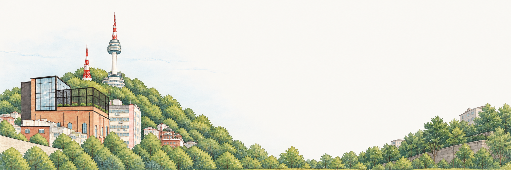
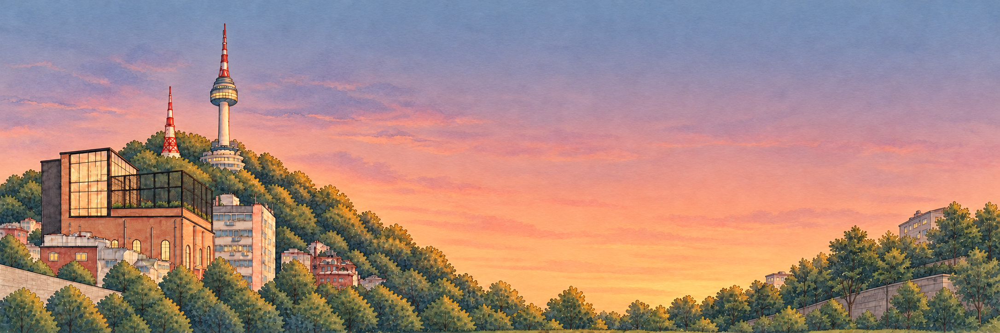
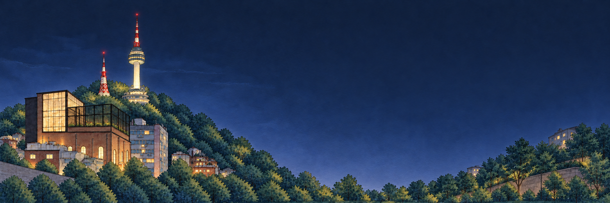

THE CHURCH AT FREEDOM VILLAGE / COMMUNITY
Faith for everyday life. People to share it with.



Design preview · Nothing is sent. Ctrl/⌘ + Enter to submit.
Slider mode follows your chosen time, not the live clock.
SCENE PREVIEW
Manual PM2.5; tower color appears at night in this preview. Not live readings or actual lighting hours. Color guide
Manual seasonal lighting study.
Only this appearance choice is remembered in a first-party cookie. Your question is not saved or sent.